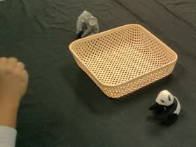
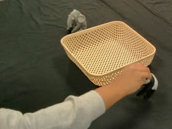
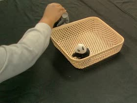
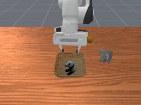

Explicit representation
Video → language
Human demo video



Pre‑trained VLM
e.g. Qwen3‑VL‑4B
Language instruction
“Put the panda toy in the basket, then put the elephant in the basket.”

Sim. observation
Down‑stream VLA or planner
acts on the sentence alone
A pre‑trained VLM watches the demo and writes down what it saw. Everything downstream sees only that sentence — the video itself is discarded, so any detail the words miss is gone.
Baselines
SeeDo
VLM + π₀.₅
π₀.₅ (expert language)